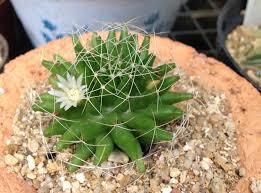
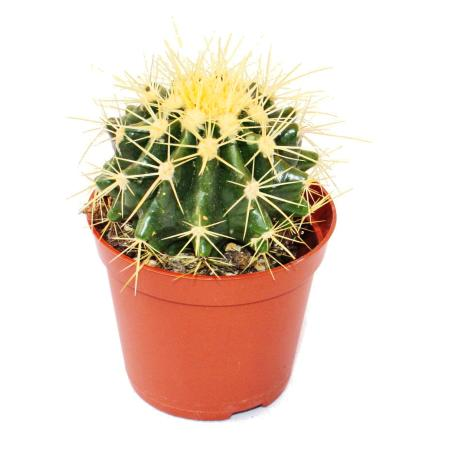
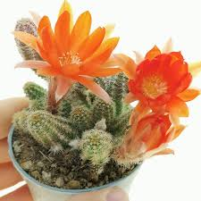

-
Mammillaria
Mesmo tão simples, atrai muitas pessoas.
Nome comum: Almofada de alfinete
-
Echinocactus Grusonii
É uma planta suculenta e também um cacto.
Nome comum: Cadeira de Sogra
-
Chamaecereus Silvestrii
Mais fáceis de se cultivar.
Nome comum: Cacto Amendoim